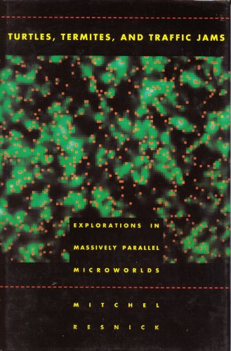
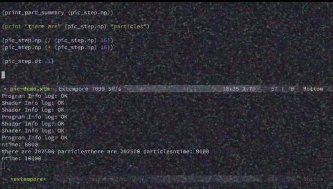
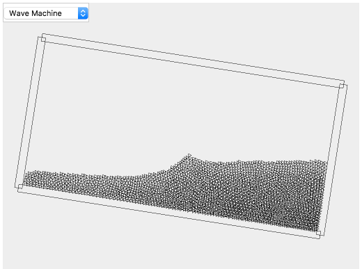
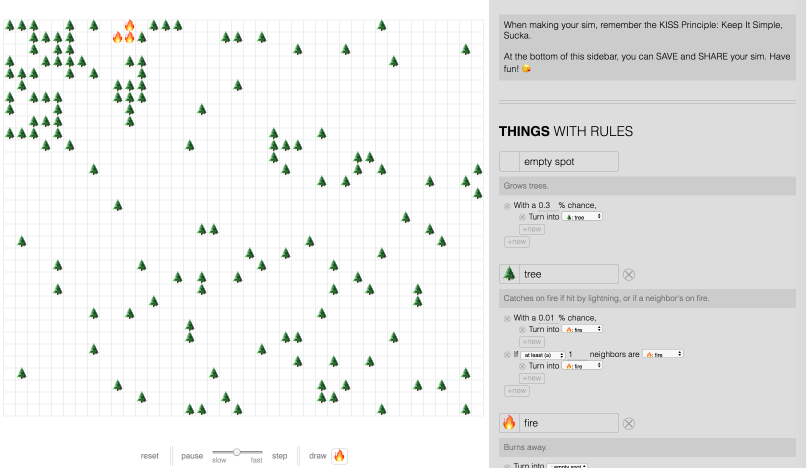

Shadama: A Particle Simulation
Programming Environment for Everyone
Yoshiki Ohshima, Dan Amelang and Bert Freudenberg
HARC/Y Combinator Research
We present a prototype of a programming system called Shadama, which
is designed to help writing programs that creates large number of
objects, control them and visualize them. Shadama's basic execution
model follows the tradition of StarLogo and its "turtles and patches"
abstraction.
M. Resnick, Turtles, Termites, and Traffic Jams: Explorations
in Massively Parallel Microworlds (Complex
Adaptive Systems). MIT Press, 1994.

The abstraction is proven to be effective and easy to
use. The primary audience intended of the language is high-school
level students to make physics simulations.
The environment supports liveness. When the user saves the program, the code change immediately takes effects on the running simulation without needing to restart the simulation.
The user code is translated to the Open GL Shading Language. OpenGL Shading Language (OpenGL Registry) The runtime data of the program is stored and kept in the memory of graphics card for fast execution.
A prototype of Shadama can be found here. Be aware that Shadama requires WebGL 2 and is affected by the floating point precision provided by your graphics card. Thus, it only works on certain computer systems. From our experience, it seems to work better on computers with an AMD Radeon graphics card and on Chrome or Firefox browsers.
Introduction
The computing power available to us today is astounding. Achieving one teraflop of performance was a milestone for a building-sized supercomputer in the late '90s, but now we expect smart phones to reach this same milestone soon. Computing performance will only continue to increase in the future.
But what are people using this power for? Not to be critical of our friends and family, but people are generally more interested in watching cat videos and playing games than trying to invent self-flying personal airplanes or discover the graviton. All joking aside, one of the big problems we face today is our struggle to advance science literacy, even within a technologically-advanced society. We need the next generation to embrace science more, not less.
We think now is a good time to redouble our efforts to provide an environment where students, artists, and even professional programmers can tap into the computing power that is available.
To this end, we have been working on a prototype of a programming language intended for high school students to explore scientific ideas.
Science is about making the invisible visible. One notable example of an invisible yet important concept is molecules in a gas. We would like students to learn about this, not by rote memorization, but through actual experiments and model-building. With the help of computers, students can make a dynamic model and understand it more deeply. This kind of environment will help students construct knowledge by doing, in line with the constructivism philosophy of education.
This is the motivation behind our prototype of a programming environment to create simulations.
We set ourselves out to make a prototype of the language, that aims to satisfy following goals:
- Object-Oriented
- Large number of objects
- Liveness
As the basis for our prototype, we follow the tradition of StarLogo, where objects are organized into turtles and patches. For those students who have used Scratch, specifying the behavior by code for one object is already familiar. Also, using the "color-touching" block to sense the value around a sprite probably is familiar, too. Breeds and patches are straightforward extensions from those concepts, and we expect that most students can pick them up easily.
For the second point, there is a trade-off between having easy language semantics and providing high performance. On one hand, we would like an end-user language to be free from constraints imposed by the particular nature of hardware. On the other hand, however, there are some fundamental limitations in the execution model of today's graphics hardware. In particular, sharing turtles' own states directly with others, or dynamically constructing a list of turtles in its neighborhood, are not implementable. But we found that the indirect communication scheme facilitated by patches mitigates the limitation.
For the third point, the environment should show the effects of user actions, in this case code changes, as soon as possible. However, when the user already has a running real-time simulation, we would not want to restart the simulation for each and every key stroke. We think that the user rather want to batch code changes to a chunk of meaningful code change before the system adapts to it.
An example of a meaningful chunk is to change the arity of a function: it is not sensible to run the program until both the function definition and its caller have been changed. After changing those different places in the code, the user can make a minimum gesture (such as hitting Cmd-S for save), and the change can take effects immediately.
A Science Experiment
We begin with an actual science experiment. This movie shows a vacuum cannon. The cannon is a six foot PVC pipe connected to a vacuum pump. We put a ping pong ball inside the pipe, cover the ends with sturdy but breakable material (such as plastic plates), and pump the air out.
The pump reduces the pressure inside the tube to about 20% of full atmospheric pressure.
When the end near the ping pong ball is broken open by a box cutter, the air molecules that rush into the pipe move into the low pressure space and the ping pong ball is pushed out the other end. Our crude setup can accelerate the ball to a speed of over 200 meters per second (about 60% of the speed of sound). Others have built similar setups that can achieve supersonic speed.
An interesting point to understand is that it is just movement of molecules that is is causing the ball to shoot out; it is not that the vacuum is sucking molecules into the pipe.
The invisible molecules that cause the ball to shoot out can be made “visible” in a sense not only through this physical experiment, but also through a computer simulation that reproduces the same phenomenon. Creating such simulations is the purpose of our programming environment.
Shadama in Action
The following movie shows some examples done in our prototype programming environment called Shadama. The script below provides an explaination of the movie. You can pause the movie at any time to scroll through and read the explanation. The captions work better when the movie is not in full screen.
Implementation
Shadama is a web-based technology. It uses WebGL 2.0 and the OpenGL Shading Language version 3.0. A property for all turtles in a breed is stored in one texture. The type texture type is "R32F" to treat them as a vector of scalar values. The multiple render target feature is used to write back the changes to multiple properties at once.
From the user code, the vertex shader code and fragment shader code, along with some support code in JavaScript are generated. The translator is written in Ohm. Ohm: A library and language for building parsers, interpreters, compilers, etc.
Related Work
One of the authors implemented a particle system as an extension of Etoys in the past.
Kedama: A GUI-Based Interactive Massively Parallel Particle Programming System.

Shadama can be seen as another attempt to bring the idea a new life. Shadama's target audience is older than Kedama's.
The biggest inspiration for Shadama (and Kedama) was Resnick's StarLogo. The basic organization of Shadama objects is largely drawn upon StarLogo's. In fact, Shadama is missing some features compared to StarLogo, as described in introdcution.
Swift et al. created a live programming environment for physics based
on Extempore.
Live Programming in Scientific Simulation

This environment provides a flexible and dynamic
code swap and interactive data inspection to a sophisticated and optimized physics simulation
framework (called Particle-In-Cell). The split of this environment is much in line with
our work, except that their work uses a third party engine as a black
box. We believe that such an engine should be also accessible to the
leaners.
Lately, there are various simulation environments, such as Liquid Fun.
LiquidFun.

But the language for Liquid Fun is not designed for end-users.
Providing bindings to GLSL to high-level languages is a hot topic.
Object Support in an Array-based GPGPU Extension for Ruby (ARRAY’16)
. Nicky Case has a simulation
construction environment based on emoji
Simulation in Emoji

They use more sophisticated compilation techniques and use CUDA to fully utilize the power of GPU, yet again, the blance is toward the performance and power, rather than ease of use. The authors think that Shadama can occupy a unique position at striking a good blance betewen the performance and ease of use.
There are blocks laungages for massively parallel particles, such as StarLogo Nova. Currently, Shadama uses a textual language, based on the observation that physics simulations often only takes concise problem description so coding part is not the major obstacle. But we are not ruling out the other possiblities of syntax, or even visual representation of program.
Conclusions and Future Work
This is an early prototype of the concept of a simulation language in which users can make simulations, interactive art and various visualization. The liveliness of the environment encourages the exploratory style of programming, that is handy to try different ideas quickly. An anecdotal observation is that a bug in a program often produces interesting visual effects, and that is motivating.
We are thinking about various improvements to the system. One major addition is to fully support simulations in 3D. While the numeric computation itself only uses scalar values and is agnostic to dimensionality, the primitives and concepts the system provides only work well for 2D applications. We will need new ideas to manage spatial data.
We plan to support more mathematics, such as vectors and matrices is in our plans. While a first-time user may not use matrices and vectors initially, we would eventually like them to learn these powerful concepts. Ideally the language will gradually introduce the user to these powerful mathematical tools.
We would like to conclude this report by stressing the importance of education. Education raises the awareness, and allow people to see things with different light. By seeing things differently, they will find more problems but those problems are solvable if they know more ways to attack. And Science is one of the biggest asset humanhas has. We hope that ideas like Shadama will help future education.
References
- M. Resnick, Turtles, Termites, and Traffic Jams: Explorations in Massively Parallel Microworlds (Complex Adaptive Systems). MIT Press, 1994.
- OpenGL Shading Language (OpenGL Registry)
- Ohm: A library and language for building parsers, interpreters, compilers, etc. (project page)
- Kedama: A GUI-Based Interactive Massively Parallel Particle Programming System: Yoshiki Ohshima. VL/HCC 2005, pp 91-98.
- Live Programming in Scientific Simulation: Ben Swift, Andrew Sorensen, Henry Gardner, Peter Davis, Viktor K. Decyk, Supercomputing Frontiers and Innovations, p. 4-15, Mar. 2016. (Journal page)
- LiquidFun: (the project page)
- Matthias Springer and Hidehiko Masuhara, Object Support in an Array-based GPGPU Extension for Ruby Proceedings of the 3rd ACM SIGPLAN International Workshop on Libraries, Languages, and Compilers for Array Programming (ARRAY’16), June 2016
- Simulation in Emoji: Nicky Case, (project page)
Appendix: The Primer of the Shadama Language
The Shadama language uses the turtles and patches abstraction, which is drawn from the tradition of StarLogo. A method is defined with the "def" statement, and invoked on each turtle in a breed when invoked. A static function invokes a method.
Breeds
Turtles are organized into "breeds". Each breed can declare its own set of properties. A breed is declared in the program with the "breed" statement. For example, a statement:
breed MyTurtle (x, y)
creates a breed of turtle called "MyTurtle", and declares that each turtle in the breed has two own properties called "x", and "y".
The type of properties are limited to scalar floats.
To define behavior for turtles, you define a method with the def
statement. Here is an example:
def move() {
this.x = this.x + 1;
this.y = this.y + 1;
}
Intuitively, when this method is invoked on a turtle, the turtle's x property and y property are incremented by one.
A method is invoked from a static function. In a static function, The
breed name is used to specify which group of turtles to execute the
method, and all turtles in the receiving breed executes it
concurrently. For example, a static function:
static step() {
MyTurtle.move();
}
calls the move method on all turtles of the MyTurtle breed. Besides user-defined methods, there are "primitives" that provide certain pre-defined features. The following is the list of primitives for breeds.
-
aBreed.setCount(count);This sets the number of turtles in the breed. For example, a static function:
static setup() { MyTurtle.setCount(10000); }will set the number of turtles in the MyTurtle breed to 10,000.
In the current implementation, there is a limit on the number of turtles in a breed. The limit by default is 1024 * 1024, or about 1 million.
-
aBreed.fillRandom(name, min, max);The fillRandom primitive sets the property specified by the string to be a random number between min (inclusive) and max (exclusive). It does not change the number of turtles in the breed. For example,
static setup() { MyTurtle.setCount(10000); MyTurtle.fillRandom("x", 0, 100); }will make each of the 10,000 instance's "x" property to be a random floating point number between 0 and 100.
-
aBreed.fillRandomDir(dxName, dyName);The fillRandomDir primitive generates a random 2D unit direction vector (that is, a vector pointing to a direction in a 2D space, and whose length is one) and store its x and y component of the vector into the own property specified by dxName and dyName, respectively. For example,
static setup() { MyTurtle.setCount(10000); MyTurtle.fillRandomDir("dx", "dy"); }sets "dx" and "dy" of a turtle with the x- and y- component of a random unit vector.
-
aBreed.fillSpace(xName, yName, xDim, yDim);The fillSpace primitive first sets the number of turtles in the breed to be xDim * yDim. Then, it places the turtles at all 2D grid points within the (0..xDim, 0..yDim) area. For example,
static setup() { MyTurtle.fillSpace("x", "y", 100, 100); }creates 10,000 turtles of the MyTurtle breed, and their "x" and "y" properties become the integral grid points spanned in (0, 0) and (99, 99) (inclusive).
-
aBreed.fillImage(xName, yName, rName, gName, bName, aName, anImageData);The anImageData argument is a Javascript ImageData object. This sets the turtle count of the breed to be anImageData.width * anImageData.height. Then, similar to fillSpace, it places those turtles at the 2D grid points within the image extent, and update their own variables specified by rName, gName, bName, and aName with the RGBA color component values of the image. Note that while the color components in the ImageData ranges from 0 and 255 (integral values), the color value in Shadama is normalized to the 0.0 and 1.0 range (inclusive). For example,
breed MyTurtle (x, y, r, g, b, a) static setup() { MyTurtle.fillImage("x", "y", "r", "g", "b", "a", anImage); }(where the value of anImage can be taken from the global variable called anImage. Different kinds of variables are described below), creates the same number of turtles to the pixel count of anImage, and stores the anImage's color component values, scaled to 1.0, into r, g, b and a properties.
Patches
Besides breeds of turtles, you can create patches. A patch is a set of "cells" that can hold values. A patch assumes a two-dimentional space of the fixed size (by default 512 * 512). For example, a statement:
patch Field (nx, ny)
declares a patch, and each cell in the patch variable holds two values "nx" and "ny".
To manipulate a patch, you pass them to a method as arguments.
The caller of a method is always a static function. To pass in a patch to a method, you pass the name of the patch as an argument. Each turtle that executes the method can only access the nearest patch cell. For example, this code:
breed MyTurtle (x, y, r, g, b, a)
patch Field (r, g, b, a)
def store(field) {
field.r = this.r;
}
static setup() {
MyTurtle.fillImage("x", "y", "r", "g", "b", "a", anImage);
MyTurtle.store(Field);
}
declares a breed called MyTurtle and a patch called Field. The "setup" function calls the "store" method with "Field" as an argument. The store method, executed for each turtle in Turtle, store the turtle's r property into the r property of the nearest cell in Field.
A turtle can read values out from the patch cell as well. For example, when the following method is executed:
def load(field) {
this.r = field.r;
}
each turtle reads the r property of the nearest patch cell and stores it into its property.
You can pass in multiple patches to a method. For example,
patch Field1 (nx, ny, r, g, b, a)
patch Field2 (nx, ny, r, g, b, a)
def transfer(f1, f2) {
f2.r = f1.r;
f2.a = f1.a;
}
and even
def swap(f1, f2) {
f2.r = f1.r;
f1.r = f2.r
}
are valid.
Local and Global Variables
A method can have local variables declared by the "var" statement. The scope of the variable is the whole method, regardless where it is declared. There can be at most one "var" declaration for the saem variable name, unlike JavaScript.
Static functions can use global variables, which are visible to all static functions. For example, if you have two static functions:
static setup() {
var begin = 1;
}
static loop() {
if (begin) {
begin = 0;
}
}
the begin variable can be referred to from both setup and loop,
There are built in global variables.
-
mousemove: an object which has property x and y -
mouseup: an object which has property x and y -
mousedown: an object which has property x and y -
time: a floating point value in seconds since the last time a specially named metho setup is called. -
width, height: the width and height of the visible 2D space. -
Display: a stand in to be a left of the dot notation
Note that mouse events are JS objects but methods can still only takes scalar values.
Parallelism
When turtles are writing into a patch, it is possible that more than one turtles are at the same cell and try to write into it. The result from this is non-deterministic.
Also, you cannot read a value that you "just" wrote within the same method. For example, if you have a function that looks like:
def test() {
if (this.r > 0) {
this.r = 0;
} else {
this.r = 1;
}
this.b = this.r;
}
the r property and b property will not have the same value after the invocation,
even though the last line reads this.b = this.r;. The assignments into this.r in the if statement negates the value, but the actual update of the variable
does not take effect until the function finishes.
If you want it so that this.b and this.r will always have the same value, you can use a local variable and write the above code as:
def test() {
var r = this.r;
if (r > 0) {
r = 0;
} else {
r = 1;
}
this.r = r;
this.b = r;
}
Control structure
Only control structure supported is the if statement. As GLSL 3.0 supports variable-count loops, Shadama should be able to support loops; but it has not implemented.
Function Primitives
There are number of functions available from methods. Most of them actually result in a direct call to the GLSL built-in functions. For example,
def prims(x) {
var c = cos(x);
var s = step(0.5, x);
var a = abs(x);
var f = fract(x); // the fraction part of x
this.r = c * s * a * f;
}
computes a value successfuly (though an arbitrary value) and stores it into the r variable.
Other Limitations
There are some limitations, and some of which are even idyosynchratic. One limitation is that one method can take patch variables or scalar values but not other turtles. For example, you cannot execute the following code:
breed A (x, y)
breed B (x, y)
def hit(other) {
var diff = other.x - this.x;
...
}
static step() {
A.hit(B);
}
because the "step" static function calls "hit" with a breed as argument. It is not a sensible program, anyway: which instance of B should be bound to "other"?
Another limitation is that you cannot write into an own variable of this *and* a patch's own from the same method. For example, the following is invalid:
def test(field) {
field.r = 1;
this.r = 1;
}
This imitation is derived from the implementation consideration on current WebGL features and may be lifted in the future. Also, by doing more code analysis, it may be made possible to aleviate the limitation. But for the time being, you need to split this kind of function into two, each only write into either patches' own variables, or own variables of "this".
Other Notes
Methods are not bound to a breed. The "set" method below:
breed A (x, r)
breed B (x, y, r, g)
breed C (r)
def set() {
this.r = 1;
this.x = 0;
}
static test() {
A.set();
B.set();
}
can be called both for breed A and breed B, but not breed C, because its only requirement is that the breed has own variables called "r" and "x", which are referred to from the function.